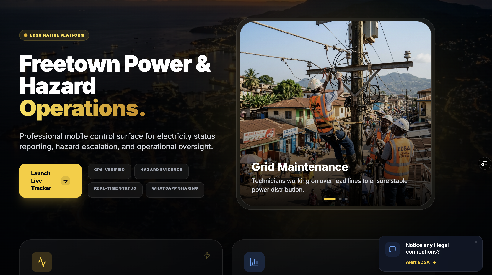
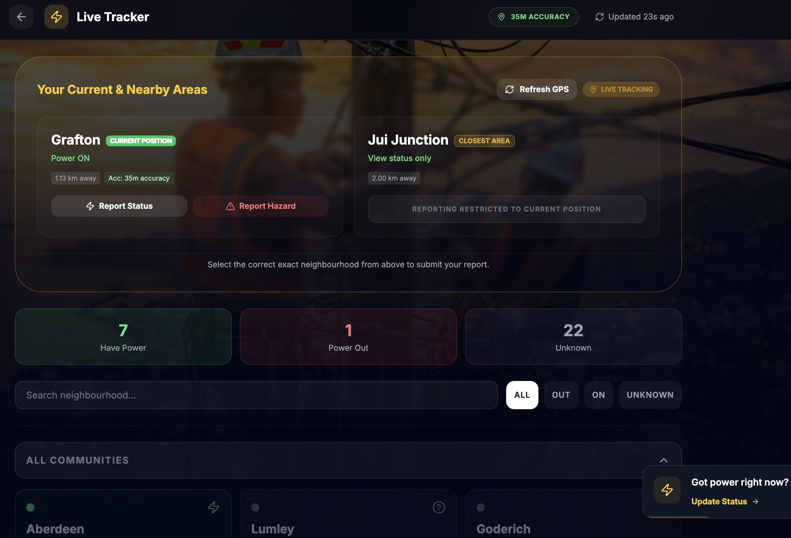
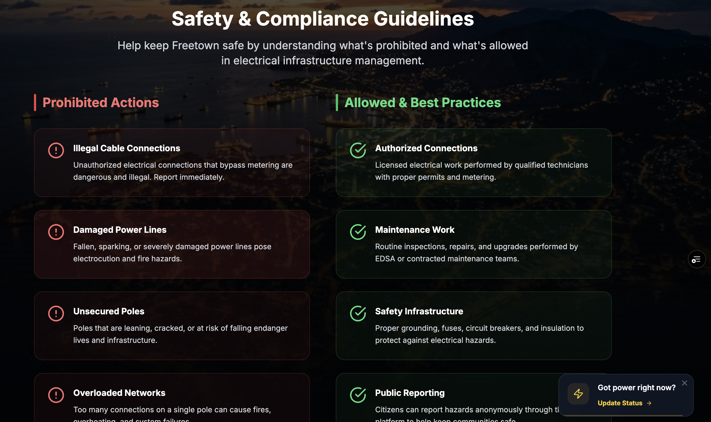
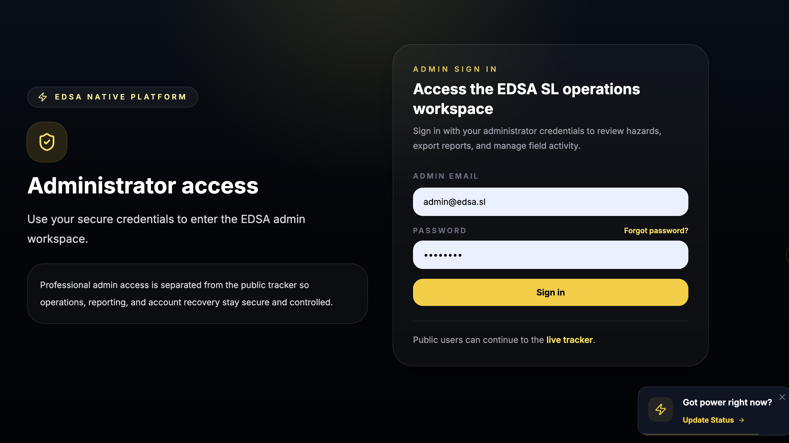
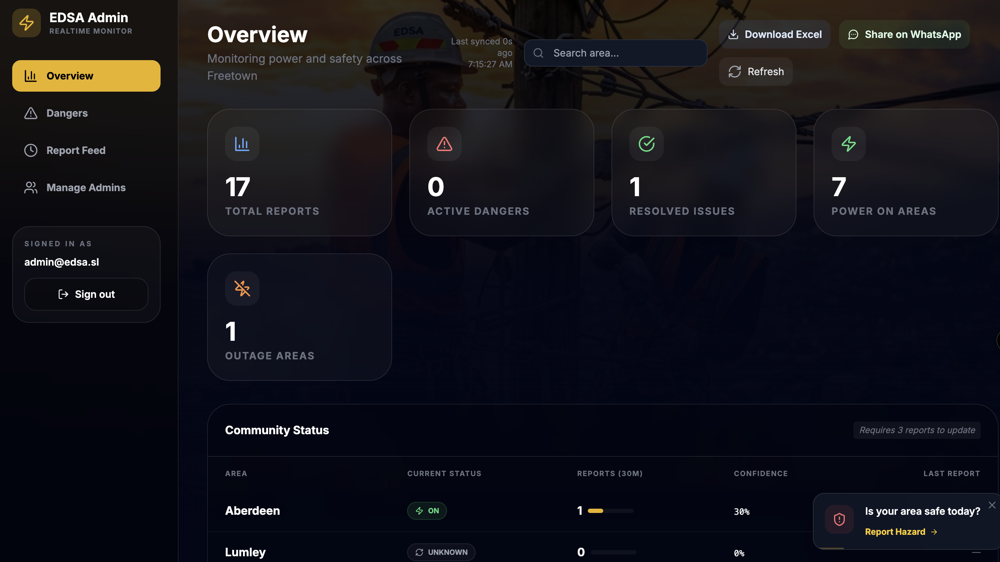
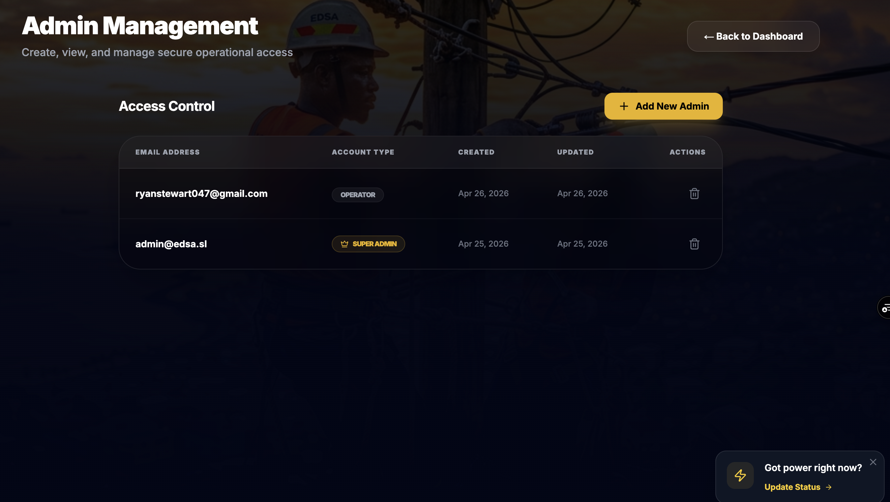

A modern, crowdsourced platform designed to modernize electricity monitoring and hazard response in Freetown, Sierra Leone.
1. Purpose of the Application
The EDSA Power Tracker is a progressive web application (PWA) built to bridge the communication gap between the Electricity Distribution and Supply Authority (EDSA) and the citizens of Freetown. Its primary objectives are:
Real-Time Transparency: Provide Freetown residents with an accurate, live map of which communities currently have power and which are experiencing outages.
Rapid Hazard Escalation: Empower citizens to immediately report critical infrastructure dangers (falling poles, sparking transformers) directly to an administrative dashboard, complete with photographic evidence and precise GPS coordinates.
Revenue Protection: Provide a secure, verifiable channel for citizens to report "Illegal Connections" and "Stolen Meters" to help EDSA mitigate revenue loss.
Data-Driven Operations: Equip EDSA leadership with a centralized dashboard that aggregates field data, allowing for efficient deployment of repair teams and strategic grid management.
2. How Data is Collected and Used in Real-Time
Data Collection (The Field)
The application relies on crowdsourced, GPS-verified intelligence. When a user opens the app, it requests their geolocation.
Smart Location Locking: The app utilizes a "Behavioral Learning Algorithm." It learns a user's primary community (e.g., Jui, Grafton) and prioritizes that area, filtering out inaccurate GPS drift.
Users can submit two types of data:
Status Updates: Simple "Power ON" or "Power OUT" pulses. The system requires multiple confirmations from different devices within an area before officially changing the area's status to prevent false reporting.
Hazard Reports: Users must submit the danger type, specific street address, description, and photographic evidence. The system automatically attaches the exact GPS latitude and longitude to the report.
Data Utilization (The EDSA Dashboard)
All data flows instantly to a secure, real-time Administrative Dashboard.
Triage & Dispatch: Admins view hazards ranked by severity. A falling pole with a photo and GPS coordinates allows EDSA to dispatch the right truck to the exact location without needing verbal directions.
Resolution Tracking: Once a team fixes an issue, the Admin marks it as "Resolved." The system archives this for historical audits and operational reporting.
Trend Analysis: The dashboard aggregates total outage reports vs. uptime, helping leadership identify persistently problematic transformers or communities.
3. Technologies Used
The platform is built using enterprise-grade, modern web technologies ensuring it is fast, secure, and highly scalable.
Frontend
Next.js 14ReactTailwind CSSFramer Motion
Delivers a "Native App" feel in the browser, complete with offline support, fluid animations, and a Glassmorphism design system.
Backend
Node.jsNext.js API RoutesPrisma ORM
Handles business logic, GPS distance calculations (using the Haversine formula), and secure data validation.
Database & Deployment
PostgreSQLVercel Edge NetworkPWA / TWA
Hosted on a globally distributed network for zero-downtime. Fully optimized for Google Play Store deployment via Trusted Web Activity (TWA).
4. Open Integration Capabilities (WhatsApp & Beyond)
The EDSA Power Tracker is not a closed system. It features a robust API architecture designed to integrate seamlessly with other modern tools.
WhatsApp Chatbot Integration
We can expose a secure webhook API that allows a WhatsApp Business Chatbot to feed directly into this system.
A citizen sends a photo of a sparking cable to the EDSA WhatsApp number.
The Chatbot asks for their location (using WhatsApp's location sharing feature).
The Chatbot automatically POSTs this data to the Power Tracker API.
The hazard instantly appears on the Admin Dashboard alongside reports submitted via the web app.
Other Integrations:
SMS Gateways: Send automated SMS alerts to neighborhood heads when a major fault is detected in their area.
EDSA Internal Systems: Export operational data (CSV/JSON) to EDSA's existing billing or grid-management software.
5. Application Screenshots

Application Home Page

Live Community Tracking Interface

Safety & Compliance Dashboard

Secure Admin Login Portal

Real-Time Administrative Dashboard

Personnel Management Interface
Developer Profile
Lead Architect & Engineer
Ryan Josiah Stewart
A passionate software engineer and AI expert dedicated to building modern, scalable digital infrastructure to solve complex logistical challenges in Sierra Leone.